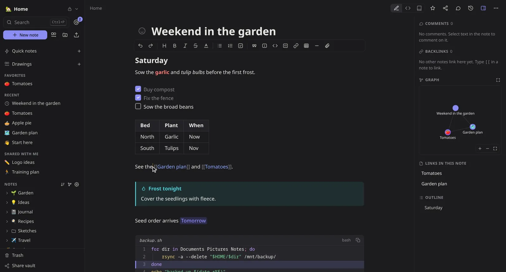
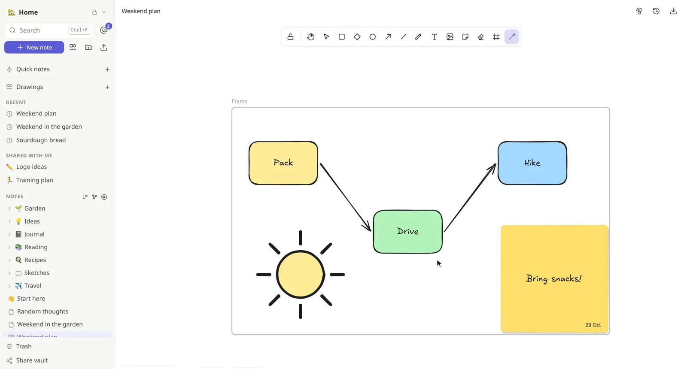
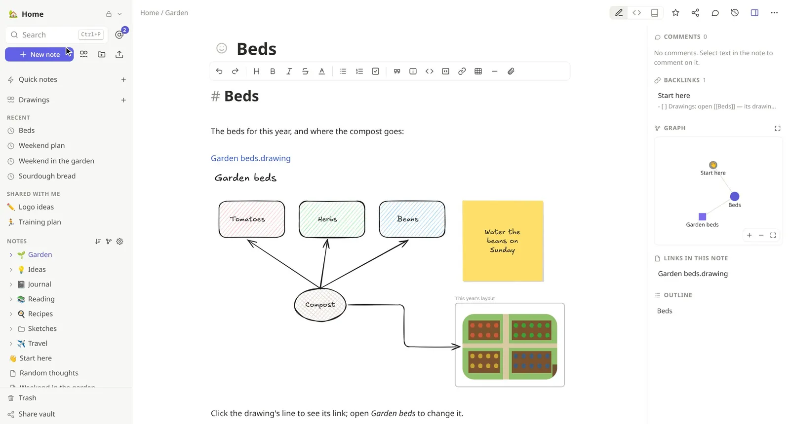
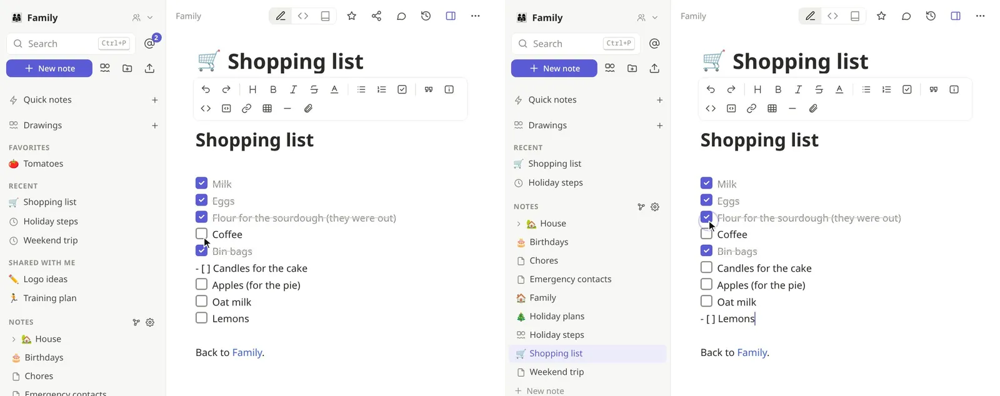
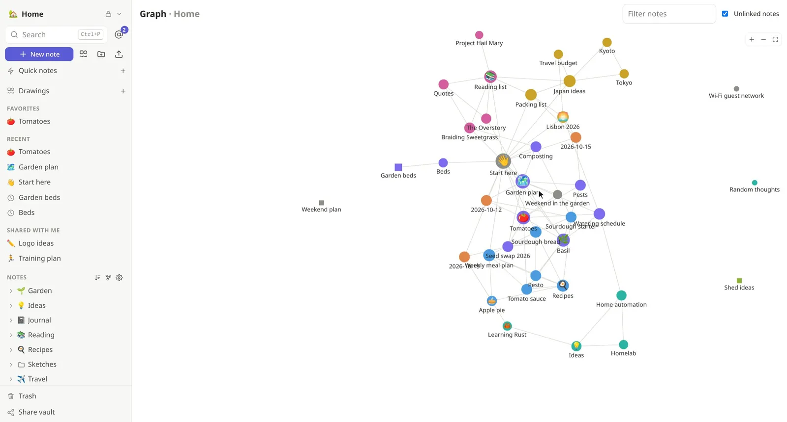

Keep your vault as files.
Import your vault with its attachments, and its Excalidraw drawings become drawings. Wiki links, callouts and tags work as you know them, and you can keep using Obsidian on the synced folder.
Markdown notes, drawings and live collaboration, end-to-end encrypted. Your devices hold the keys, so the server, ours or yours, stores ciphertext and nothing else.
Plays well with what you already use
## Write
Formatting shows as you type and the syntax steps aside, so anyone can write. Underneath, every note is still a Markdown file you can open anywhere. A toolbar for the mouse, shortcuts for the keyboard, Vim keys if that's you.

## Draw
A whiteboard with Excalidraw's hand-drawn look, written in Rust and built in: shapes, arrows that stay attached, sticky notes, frames and the laser pointer. Put a drawing in any note and it stays live. Draw together and see everyone's pointer.
It opens and saves Excalidraw's and Obsidian's files, so your drawings go wherever you do.


## Together
Share a vault with your family or your team, or a single note with anyone. Everyone edits at once with live cursors, and changes merge cleanly, even after a day offline. Comment on any passage and @mention people: their devices find the mention, the server never learns who it was.

## Connect
[[Wiki links]] that create the note you're missing, backlinks and an outline beside every note, and a graph of everything, drawings included. Jump anywhere with Ctrl P, search with tag:, folder: and title:, and catch a thought in a second with a quick note (Alt Q).

## Your files, your tools
The desktop client keeps your vaults as plain Markdown files, synced both ways. Edit them in Obsidian, Neovim or VS Code while others type in the browser, and it all merges. A command line that does everything, and AI agents with their own keys that see only the vaults you share with them.
$ notekpr login --server https://notes.example.com Signed in as Alice: device approved. $ notekpr sync --dir ~/Notes mirroring 3 vaults into ~/Notes $ nvim ~/Notes/Family/Weekend\ trip.md # :w, and Bob sees it a second later $ notekpr --profile assistant \ write --append Assistant Digest.md < news.md updated Digest.md
## Private by design
Everything is encrypted on your devices before it leaves them: note text, titles, file names, attachments, vault names, even who is looking at which note. The server, ours or yours, orders and stores ciphertext. Removing someone renews the keys, and every change is signed by the person who made it.
01 00000002 a4c123b1612dd272d1371c17149d439536b3216fdaeeb975 729fae923d5a4fd12aabfe228f219e9cb0eb53f16947ccf25ec84d8dbc74254770f58904dba41ecccc3fc1626e53a13043b026c48bbf33feff9243a8f506b40928b5b7a767c76fb008f86bebb2737f6a6f0fb23c6f5da2cec255404e 4fb440034d6608697a8d41bed440e504 versionkey epochnonce (24 bytes)ciphertexttag
Your account key never leaves them. A new device is approved from one you already use, with a code to compare, or unlocked with your recovery key.
The vault's owner signs who belongs to it, and every edit is signed by its author: a server can't add people or forge changes.
The server still learns sizes, timing and who shares with whom. The security page lists all of it, so you can judge for yourself.
## In the box
[[Wiki links]], embeds, tags, an outline and a graph view of how notes link, all worked out on your device.tag:, folder: and title: filters, and a quick switcher..zip to move to another server.## Moving in
Bring your notes. Keep your habits. Lose the worry about who can read them.
Import your vault with its attachments, and its Excalidraw drawings become drawings. Wiki links, callouts and tags work as you know them, and you can keep using Obsidian on the synced folder.
A toolbar, comments with @mentions, editing together live, shared spaces with roles. All of it end-to-end encrypted, and every page a Markdown file you own.
Quick notes in a second, backlinks, a graph and full-text search, all worked out on your devices. Bring any folder or .zip of Markdown along.
## Pricing
Use notekpr on our servers or run it on your own: the same app, the same encryption, and nobody but you can read your notes. Start free and add only what you need.
Any plan, Free included, can grow one piece at a time: buy one more vault, more room or more drawings, without changing plans.
Rather run it yourself? Every feature, no limits but your hardware: one Rust binary and a SQLite file, open source under the AGPL.
Self-hosting guideHosted plans aren't open yet: these plans, limits and prices are a draft and will change before launch.
## Questions
No. Note text, titles, file and folder names, attachments and vault names are encrypted on your devices with keys the server never gets, on our servers and on yours alike. The server does learn some metadata, such as sizes, timing and who shares with whom; the security page lists exactly what.
Your recovery key, shown once when you set up, unlocks your account on a new device. Otherwise, new devices are approved from one you already use.
Any time. Export a vault as Markdown, keep a synced folder of files on your disk, or export everything as one .zip and import it on another server: ours to yours, or back.
Yes, all of it, the server, the web app and the desktop client, under the AGPL. Read it, run it, check it.
Yes. The desktop client keeps your vaults as a folder of Markdown that Obsidian opens as a vault, synced both ways. Importing an Obsidian vault brings its attachments and turns its Excalidraw drawings into drawings.
Yes. The browser keeps an encrypted copy of your vaults, and what you write offline syncs and merges when you are back.
It's young, and it works: it is tested end to end, and known issues are tracked in the open. Keep backups of what matters, as with any new tool.